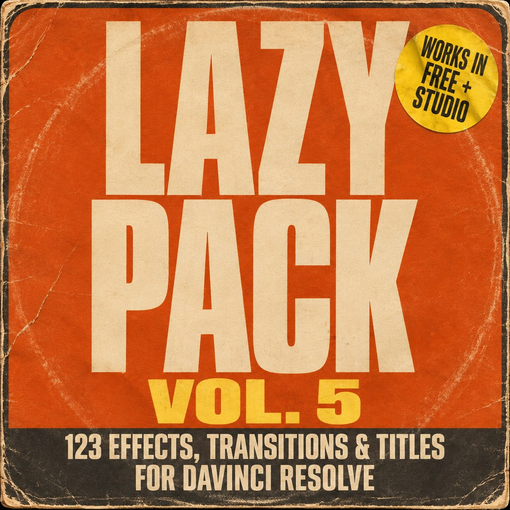

123 effects, transitions and titles. The new subject aware effects and transitions find the person in your shot by themselves and build the look around them.

Fonts (install these), double-click each font and press Install.Lazy Pack Vol.5.drfx and confirm.Edit page › Effects / Titles › Lazy Artist.